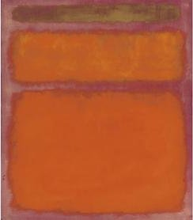

Orange, Red, Yellow
Mark Rothko · 1961 · Acrylic on canvas · 236.2 × 206.4 cm · Private collection
In copyright. Look and learn: shown for study, not for download.
Rothko painted this canvas, about 236 by 206 centimetres, in 1961, the year the Museum of Modern Art gave him a retrospective. Marlborough Fine Art in London sold it to the collector David Pincus in 1967, and it did not come back on the market for 45 years. At Christie's in May 2012, from Pincus's estate, the bidding ran for more than six and a half minutes and the price reached $86,882,500, against estimates near $45 million.